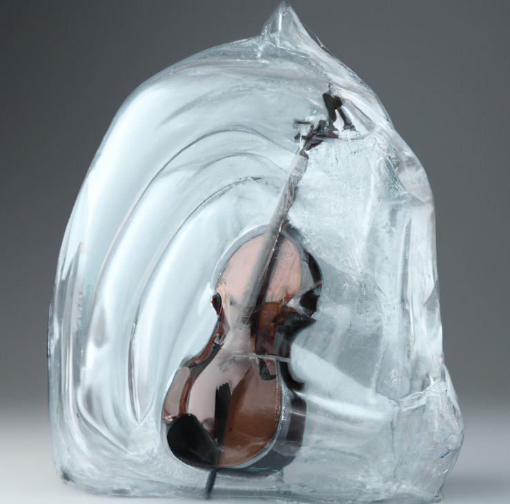

- Generated by
 1.13.2
1.13.2
|  |
cello
JUCE ValueTrees for Humans
|
| Ccello::Value< T >::Cached | A utility class to maintain the last known value of a cello::Value object – each call that fetches from a Value does two things that may be more costly than we like in some cases: |
| ▼Cjuce::InterprocessConnection | |
| Ccello::IpcClient | |
| ▼Cjuce::InterprocessConnectionServer | |
| Ccello::IpcServer | |
| ▼Cjuce::ValueTree::Listener | |
| ▼Ccello::Object | |
| Ccello::IpcClientProperties | Properties struct to monitor an IPC client. Created automatically when creating an IpcClient object, and will be named after the cello Object that's connected to the IpcClient, with the string "IpcClient" appended |
| Ccello::IpcServerProperties | |
| Ccello::Path | Class to navigate between subtrees that are all connected together |
| Ccello::Query | |
| Ccello::ScopedForceUpdater | RAII class to restrict the 'forceUpdate` value to one scope |
| Ccello::SyncController | Class to manage bi-directional sync between two Objects in different threads, preventing feedback loops. Each SyncController contains a pair of Sync objects, one for each direction of the sync |
| Ccello::SyncData | Data structure for holding synchronization update information |
| ▼CTestSuite | |
| CTest_cello_ipc | |
| CTest_cello_query | |
| CTest_cello_sync | |
| CTest_cello_value | |
| Ccello::Test_cello_path | |
| ▼Ccello::UpdateQueue | |
| Ccello::IpcClient | |
| Ccello::Sync | Permits thread-safe Object updates by using the juce::ValueTreeSynchroniser class to generate small binary patches that are used to pass updates from one copy of a ValueTree to another, each in separate threads. This sync is only performed in one direction, so you will need a pair of these objects to perform bidirectional syncs |
| ▼Ccello::UpdateSource | |
| Ccello::Object | |
| ▼Ccello::ValueBase | |
| Ccello::Value< T > | A class to abstract away the issues around storing and retrieving a value from a ValueTree. Designed to make working with VT values more like working with regular class/struct members |
| ▼Cjuce::ValueTreeSynchroniser | |
| Ccello::IpcClient | |
| Ccello::Sync | Permits thread-safe Object updates by using the juce::ValueTreeSynchroniser class to generate small binary patches that are used to pass updates from one copy of a ValueTree to another, each in separate threads. This sync is only performed in one direction, so you will need a pair of these objects to perform bidirectional syncs |
| Cjuce::VariantConverter< cello::IpcServerStatus > | |
| Cjuce::VariantConverter< std::complex< float > > | A variant converter template specialization for std::complex<float> <--> & juce::var. VariantConverter structs need to be in the juce namespace for them to work properly |